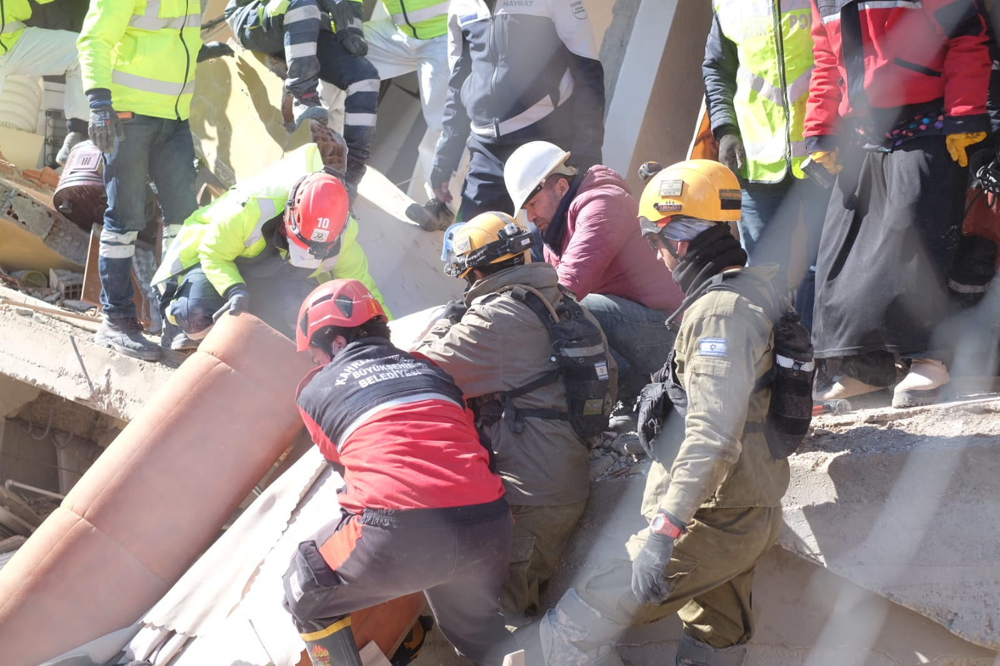
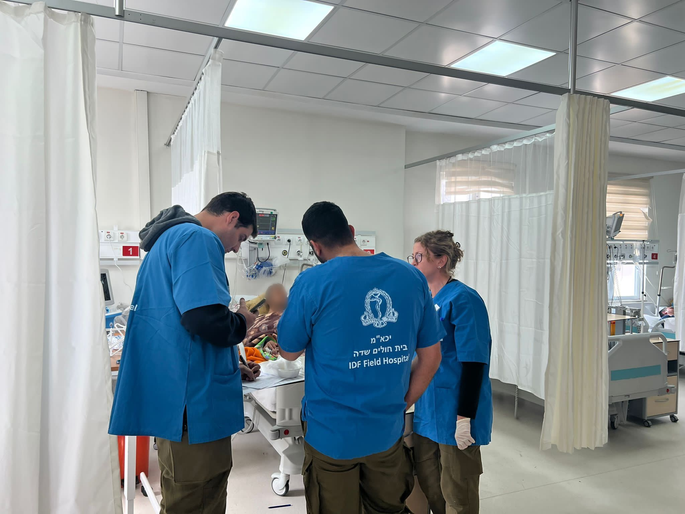
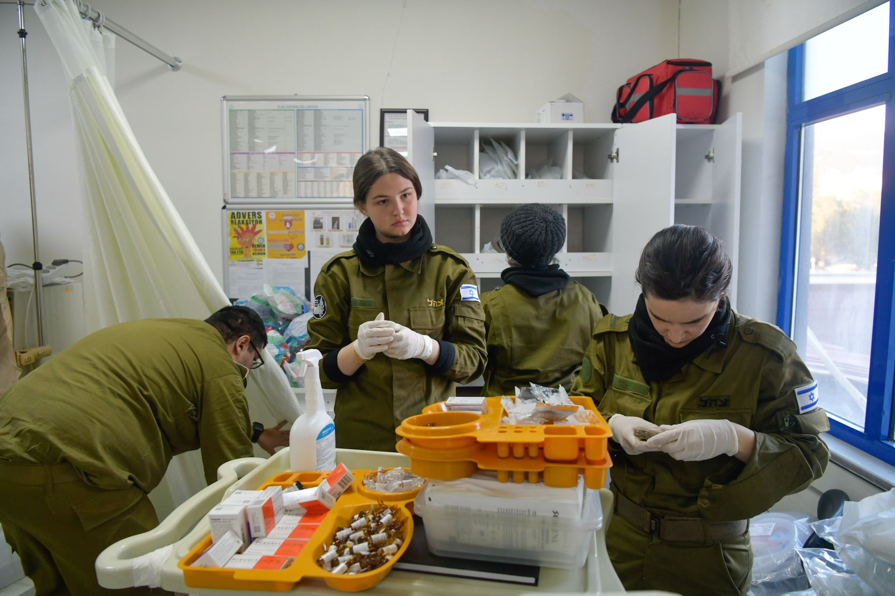
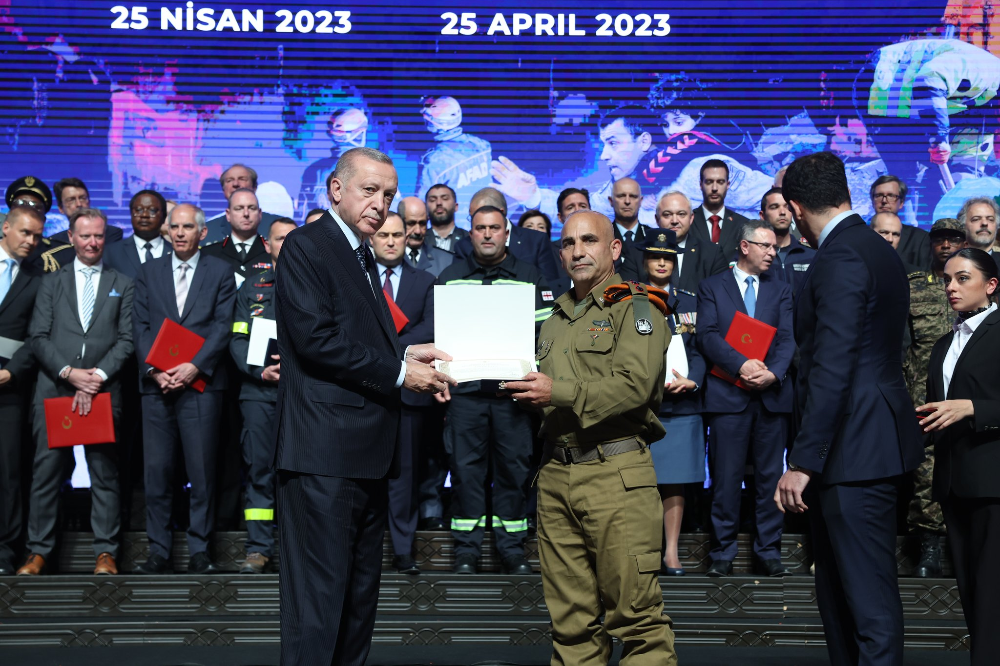
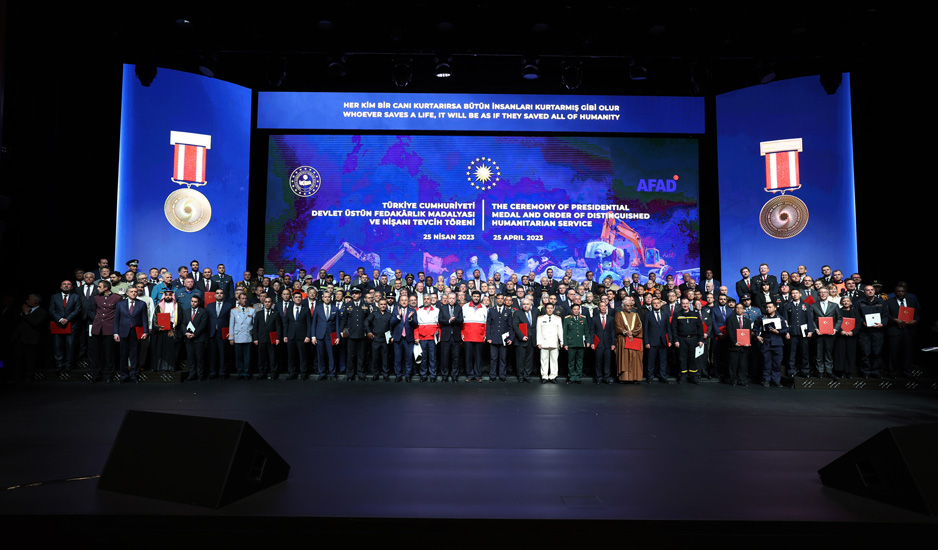

משלחת צה"ל לטורקיה · מבצע "ענפי זית" · פברואר 2023
מההריסות בקהרמנמרש למדליית המדינה הטורקית: המשלחת הישראלית שחילצה ילד אחרי 116 שעות
ב-6 בפברואר 2023, ב-04:17 לפנות בוקר, רעדה האדמה בדרום טורקיה — 7.8 במוקד קהרמנמרש. עוד באותו ערב המריאה מבסיס נבטים משלחת חילוץ ישראלית; "אנחנו משלחת של 140 אנשים", כתב אחד מחבריה ביומנו. חמישה ימים אחר כך, אחרי 116 שעות מתחת להריסות, נמשך החוצה ילד בשם רידואן צ'קירוגלו — חי. את הרגע הזה תיעדה בזמן אמת אנדולו, סוכנות הידיעות הממלכתית של טורקיה. לפי דובר צה"ל חולצו 19 בני אדם חיים, ויותר מ-470 טופלו בבית החולים העירוני שהמשלחת סייעה בפתיחתו מחדש יחד עם צוותים טורקים. חודשיים וחצי אחר כך, במרכז הקונגרסים בבשטפה שבאנקרה, קיבל קצין במדי צה"ל — אחד מ-116 זרים שהוקרו בטקס — מידי הנשיא ארדואן את מדליית ההקרבה המעולה ואת אות ההקרבה המעולה מטעם המדינה. על מסך הבמה נכתב, בטורקית ובאנגלית: "מי שמציל נפש אחת — כאילו הציל את האנושות כולה".

חייל צה"ל — דגל ישראל על שרוולו — ומחלץ של עיריית קהרמנמרש רבתי (KAHRAMANMARAŞ BÜYÜKŞEHİR BELEDİYESİ), רכונים יחד על אותה תקרת בטון קרוסה. קהרמנמרש, 8 בפברואר 2023. צילום: יהודה ארי גרוס / טיימס אוף ישראל.
התמונה מ-8 בפברואר — שלושה ימים לפני חילוצו של רידואן; נראים בה מחלצים בעבודה, לא מחולץ, וכיתוב המקור אינו מזהה איש.
הרעש והזינוק
ב-6 בפברואר 2023, בשעה 04:17 לפנות בוקר שעון מקומי, רעדה האדמה בדרום טורקיה בעוצמה 7.8, במוקד שבמחוז קהרמנמרש. יותר מ-50,000 הרוגים בטורקיה; המניין הרשמי בסוף אפריל 2023 — 50,783, לפי שר הפנים. עוד באותו ערב המריאה מבסיס נבטים משלחת החילוץ של פיקוד העורף. "אנחנו משלחת של 140 אנשים", כתב ביומנו רס"ן במיל' הלל שלו, מחברי המשלחת, על ספירת הראשים בהמראה. "לפני חצי שעה הורדנו שני חיילים בגלל מגבלת מקום".
הדרך לזירה
נתוני ההיערכות שלהלן נמסרו בידי צה"ל ופיקוד העורף; אישוש טורקי עצמאי להם — חיפשנו ולא נמצא. המטוס הראשון נחת באדנה ב-7 בפברואר בשעה 05:00, והכוח הגיע לקהרמנמרש ב-17:30. באותו יום מסר מפקד המשלחת, אל"ם (מיל') גולן ואך: "בשעות אחר הצהריים כבר יצא לטורקיה כוח ראשון, צוות קטן של מומחים שיקלוט את המשלחת כשתנחת במקום. נשתמש בכל הניסיון שצברנו עד כה כדי להציל חיים ולעזור לטורקיה".
כמה גדולה הייתה המשלחת? המקורות נוקבים במספרים שונים, ואיננו מאחדים אותם למניין אחד: "משלחת של 140 אנשים" ספר הלל שלו במטוס הראשון; שגרירות ישראל הודיעה על צוות ליבה של 167; דובר צה"ל נקב בכ-150 אנשים במשלחת החילוץ; ועיתון Şalom דיווח על כ-230 איש בסך הכול — מומחי חילוץ, אנשי רפואה צבאיים ורופאי משרד הבריאות הטורקי. את המשלחת הרפואית, שנחתה למחרת, 8 בפברואר, נקב דובר צה"ל בכ-150 איש. את הציוד הטיסו 15 מטוסי תובלה של חיל האוויר — "מאות טונות", לפי Şalom; פיקוד העורף נקב בכ-27 טון ציוד רפואי.
החילוצים
אחד החילוצים הראשונים שתועדו בשם היה ב-8 בפברואר: אוזלם בולאט, בת 26. סוכנות הידיעות אנדולו דיווחה בו ביום:
"İsrail'den gelen arama kurtarma ekibi, 8 Şubat'ta… 26 yaşındaki Özlem Bolat"בתרגום חופשי: "צוות החילוץ וההצלה שהגיע מישראל חילץ ב-8 בפברואר… את אוזלם בולאט בת ה-26".
שלושה ימים אחר כך הגיע הרגע שנתן לדף הזה את שמו. בהריסות מתחם אברר (Ebrar Sitesi) בקהרמנמרש, 116 שעות אחרי הרעש, נמשך החוצה רידואן צ'קירוגלו, בן 8 — חי. אמו, ליילה, נמצאה ללא רוח חיים. אנדולו תיעדה בזמן אמת:
"İsrail'den gelen arama kurtarma ekibi… 8 yaşındaki Rıdvan Çakıroğlu'nu enkazdan kurtardı"בתרגום חופשי: "צוות החילוץ וההצלה שהגיע מישראל חילץ מן ההריסות את רידואן צ'קירוגלו בן ה-8".
הערת מקור: AA, שדיווחה בזמן אמת, נקבה בגיל 8; דובר צה"ל נקב ב"ילד בן תשע". הדף נוקב במספר שתועד בזמן אמת.
הערת מקור: מפקד המשלחת מסר באפריל "130 שעות"; הדף נוקב ב-116 — המספר שתועד בזמן אמת.
העבודה בהריסות נעשתה גם יחד עם צוותים טורקים: באחד התצלומים נראים חייל צה"ל ומחלץ של עיריית קהרמנמרש רבתי רכונים יחד על אותה תקרת בטון קרוסה.
בסך הכול, לפי דובר צה"ל, חילצה המשלחת 19 בני אדם חיים. עיתון Hürriyet דיווח בבוקר 11 בפברואר על 18 מחולצים "עד כה" (Şimdiye kadar); המספר הסופי, לפי דובר צה"ל ולפי שגרירת ישראל בטורקיה, הוא 19. ספירה טורקית מצטברת עצמאית של המחולצים — חיפשנו ולא נמצא.
"בית חולים שדה" — בתוך בניין
"בית חולים שדה" הוא שמה של היחידה הרפואית הישראלית, לא תיאור המתקן. על העובדות בשטח מסכימים כל המקורות: מאהל שדה עצמאי לא הוקם; העבודה הרפואית נעשתה בתוך בית החולים העירוני נג'יפ פאזל בקהרמנמרש; והאוהלים שנפרסו בפאתי העיר שימשו מחנה היערכות ומגורים. את המבנה השמישה המשלחת מחדש בציוד שהוטס מישראל, בעבודה משותפת עם צוותים טורקים.

על גב החולצה כתוב 'בית חולים שדה · IDF Field Hospital' — ומסביב נראים תקרה אקוסטית, תאורה שקועה וחלונות. 'בית חולים שדה' היה שם היחידה הישראלית; המקום עצמו היה מבנה בית חולים קיים בקהרמנמרש, שהמשלחת סייעה בפתיחתו מחדש, לפי דובר צה"ל. 10 בפברואר 2023. צילום: דובר צה"ל.
משרד הבריאות הטורקי מסר, בתשובה לבדיקת העובדות של אנדולו, את הגרסה הרשמית: ציוד בית החולים השדה שהובא כלל לא נפרס ("çadır hastane kurulmadığını"), כי בתי החולים העירוניים תפקדו, והצוות הישראלי שובץ בבתי חולים שהקצה המשרד. רופאי המשלחת עצמם כתבו במאמר בכתב עת בשיפוט עמיתים: "decided to integrate with an existing hospital", וכן: "The hospital had been left with a skeleton staff".
שתי שאלות נשארות במחלוקת בין מקורות חזקים, ואיננו יכולים להכריע בהן: באיזה מצב היה בית החולים — "תפקד", כדברי משרד הבריאות, או "נותר עם צוות שלד", כדברי רופאי המשלחת; ומי יזם את השילוב — שיבוץ של המשרד, או החלטת המשלחת להשתלב. שתי הגרסאות מובאות כאן זו לצד זו. רק בשאלת "אוהל או מבנה" הסתירה היא במינוח בלבד — על מה שקרה בשטח אין מחלוקת.

אנשי המשלחת מכינים תרופות. על הקיר שמאחוריהם — כרזות בטורקית: 'ADVERS REAKSİYON' (תגובת לוואי), כרזת עירויי דם, ולוח 'İLAÇ GÜVENLİĞİ LİSTESİ' (רשימת בטיחות תרופות). הישראלים בתמונה הם האנשים והציוד; הקירות — והשילוט המודפס שעליהם — של בית החולים הטורקי. 10 בפברואר 2023. צילום: דובר צה"ל.
לפי דובר צה"ל טופלו במקום יותר מ-470 בני אדם ובוצעו 10 ניתוחים. כ-150 מהמטופלים היו ילדים, לפי דובר צה"ל. לפי "טיימס אוף ישראל", בין המטופלים היו גם פליטים סורים. במאמר רופאי המשלחת נמסר: 470 מטופלים בשישה ימי פעילות קלינית, שיא של 152 ביום אחד, 10 ניתוחים.
הסיום — וההעברה לצוות המקומי
ב-15 בפברואר הסתיימה המשימה במועד שתוכנן מראש, והעבודה בבית החולים הועברה באופן מסודר לצוות המקומי.
בשבועות שאחרי נפוצה טענה שהצוות הישראלי "נסוג מסיבות ביטחוניות". בדיקת העובדות של סוכנות אנדולו פסקה ב-17 בפברואר שהטענה אינה משקפת את המציאות. לפי הודעת שגרירות ישראל שהובאה בבדיקת אנדולו, ההעברה נעשתה בהחלטה משותפת של המשלחת ובית החולים נג'יפ פאזל. מתח ביטחוני אכן היה בזירה — במקומות ובגופים אחרים: צוותים מאוסטריה ומגרמניה השהו את עבודתם במחוז האטאי, וכ-40 מתנדבי "איחוד הצלה", משלחת אזרחית נפרדת, עזבו מוקדם בשל מה שתואר כאיום "concrete and immediate". לפי שגרירת ישראל בטורקיה, אירית ליליאן, עזיבת המשלחת הייתה "לא בשל איום ביטחוני" ("bir güvenlik tehdidi nedeniyle değil"), והצוות הישראלי היה בטוח. שלושת האירועים — סיום מתוכנן בקהרמנמרש, השהיות בהאטאי ועזיבת המשלחת האזרחית — נכרכו בטענה אחת שאינה מבחינה ביניהם.
האם הייתה סכנה? העמדות שנמסרו אינן זהות, ואנו מציגים את שתיהן כלשונן. בקבלת הפנים למשלחת בבסיס בן-עמי אמר הרמטכ"ל, רא"ל הרצי הלוי:
"You went to a dangerous place, both in a seismological sense and security-wise in a way. I have to say that we were worried about security in the beginning and wanted to put more significant security than what the Turkish authorities allowed, without getting into details. But this did not cause us to rethink"בתרגום חופשי: "יצאתם למקום מסוכן, גם במובן הסייסמולוגי וגם, במידה מסוימת, במובן הביטחוני. אני חייב לומר שבתחילה היינו מודאגים מהאבטחה, ורצינו להציב אבטחה משמעותית יותר משהרשויות הטורקיות אפשרו, בלי להיכנס לפרטים. אבל זה לא גרם לנו לשקול מחדש".
ההוקרה — אנקרה, 25 באפריל
חודשיים וחצי אחרי הרעש ערכה טורקיה טקס מדינה במרכז הקונגרסים בבשטפה שבאנקרה. 334 בני אדם — 218 טורקים ו-116 זרים — קיבלו את מדליית ההקרבה המעולה ואת אות ההקרבה המעולה מטעם המדינה. לפי הנשיאות הטורקית פעלו בזירה יותר מ-35,000 אנשי חילוץ, ולצדם 11,320 צוותי חילוץ מ-90 מדינות זרות. בתיעוד שפרסמה שגרירות ישראל בטורקיה נראה הנשיא רג'פ טאיפ ארדואן מגיש תיק-תעודה פתוח לקצין במדי צה"ל. לפי השגרירות, בין המקבלים היו אל"ם גולן ואך, מפקד המשלחת, וסגן ראש המשלחת נדב מרקמן.
העמודים הרשמיים של הנשיאות ושל לשכת התקשורת אינם מזכירים את ישראל — אבל הם אינם נוקבים בשמה של אף מדינה זרה; הנוסח שם הוא "צוותים מקומיים וזרים" ("yerli ve yabancı ekipler"). ההוקרה מתועדת בשמות אצל סוכנות אנדולו ובצד הישראלי.

25 באפריל 2023, אנקרה: נשיא טורקיה רג'פ טאיפ ארדואן מעניק תעודה לקצין במדי צה"ל, בטקס המדינה להוקרת צוותי חילוץ מקומיים וזרים. לפי שגרירות ישראל בטורקיה, בין מקבלי מדליית ואות ההקרבה המעולה היו אל"ם גולן ואך, מפקד משלחת החילוץ, וסגן ראש המשלחת נדב מרקמן. צילום: שגרירות ישראל בטורקיה.
שלושה ימים אחרי הטקס סיפר ואך לסוכנות אנדולו איך נראה לו הטקס:
"Size doğruyu söylüyorum. Birçok kez tüm ülkeler teşekkür etti. Ama ilk defa bir ülkenin teşekkür için düzenlediği tören çok saygı uyandırıcı ve onur vericiydi"בתרגום חופשי: "אומר לכם את האמת — פעמים רבות הודו לנו מדינות, אבל זו הפעם הראשונה שמדינה עורכת טקס הוקרה, וזה מעורר כבוד ומרגש".
על מסך הבמה, בטורקית ובאנגלית, נכתב: "HER KİM BİR CANI KURTARIRSA BÜTÜN İNSANLARI KURTARMIŞ GİBİ OLUR" — מי שמציל נפש אחת, כאילו הציל את האנושות כולה. הנוסח הטורקי שעל המסך הוא תרגומו המקובל של פסוק הקוראן (אל-מאאידה 32); מקבילה לו במשנה, סנהדרין ד, ה.

25 באפריל 2023, מרכז הקונגרסים בבשטפה שבאנקרה: טורקיה עורכת טקס מדינתי להוקרת צוותי חילוץ מקומיים וזרים שפעלו ברעידת האדמה של 6 בפברואר. על מסך הבמה, בטורקית ובאנגלית: 'מי שמציל נפש אחת — כאילו הציל את האנושות כולה'. צילום: לשכת נשיאות טורקיה.
מה עוד לא ידוע
מה עלה בגורלם של רידואן ושאר המחולצים בחיים אחרי חילוצם — לא ידוע לנו ממקור מאומת.
ספירה טורקית עצמאית של מספר המחולצים בידי המשלחת, ואישוש לא-ישראלי למספרי המחולצים והמטופלים — חיפשנו ולא נמצא.
מה נעשה בציוד הרפואי אחרי 15.2.2023 — אין מקור, ולכן איננו כותבים דבר.
תמונת חזית מאומתת של המתקן הרפואי עצמו — חיפשנו ולא נמצא.
המקורות
כל מקור: ציטוט ישיר ולינק.
דובר צה"ל / פיקוד העורף — סיכום המבצע, 15.2.2023: "במהלך שבעה ימים של מאמצים ממושכים… ללמעלה מ-470" — 19 מחולצים חיים, יותר מ-470 מטופלים, המפקדים בשמם. אומת באופן בלתי-תלוי מול תקציר Journal of Emergency Management 23(3).
idf.il — משלחת לטורקיה "ענפי זית"
סוכנות אנדולו (AA) — חילוץ רידואן, 11.2.2023 (מאת Mehmet Ali Özcan): "İsrail'den gelen arama kurtarma ekibi… 8 yaşındaki Rıdvan Çakıroğlu'nu enkazdan kurtardı" · כותרת: "…116 saat sonra kurtarıldı" · אתר החילוץ: "Kahramanmaraş Ebrar Sitesi enkazında çalışma yürüten" — מתחם אברר.
aa.com.trארכוב: 20230210233603, 20230515080154
AA — חילוץ אוזלם בולאט, 9.2.2023 (מאת Bekir Aydoğan): "İsrail'den gelen arama kurtarma ekibi, 8 Şubat'ta… 26 yaşındaki Özlem Bolat".
aa.com.trארכוב בן-יומוהערה: בסנפשוט בן-היום הזה השתמר גם דיווח אנדולו על הודעת שגרירות ישראל באנקרה מ-7 בפברואר: "167 kişilik asli ekibin" — ארכוב בן-זמן למספר 167 המובא בגוף הדף בייחוס גלוי לשגרירות.הערת שקיפות על מקורות 2–3: שני החילוצים מתועדים בדיווחי אנדולו בזמן אמת; הצלבת שני הדיווחים מגבירה את הוודאות, אך אינה שקולה לאישוש מגורם בלתי-תלוי נוסף.
AA Teyit Hattı (בדיקת עובדות), 17.2.2023: טענת הנסיגה הביטחונית אינה משקפת את המציאות; משרד הבריאות: "çadır hastane kurulmadığını" — ציוד השדה לא נפרס.
aa.com.tr / teyithatti
Journal of Emergency Management 23(3), 2025, עמ' 417–420 (Alpert, Malkin, Kobliner-Friedman): "decided to integrate with an existing hospital… The hospital had been left with a skeleton staff… helped bring the Necip Fazil City Hospital back to working capacity" · DOI: 10.5055/jem.0870 · נקרא תקציר בלבד — הגוף חסום בתשלום.
The Times of Israel, 15.2.2023: "around 470 victims, including 150 children" · ציטוט הרמטכ"ל הלוי המובא בגוף הדף.
timesofisrael.comארכוב בן-יום: 20230215193002
The Times of Israel, 12.2.2023: "Israeli rescue teams have so fare managed to rescue 19 Turkish civilians" (השגיאה so fare — במקור) · איחוד הצלה — "some 40 volunteers, mostly medical professionals" — עזב בשל איום "concrete and immediate threat, according to Dovi Maisel".
timesofisrael.comארכוב: 20230212212211
The Times of Israel, 9.2.2023 (מקור תמונה 4): כיתוב Flash90: "An aerial view shows the staging area of the Israeli army and Israeli rescue forces near the scene of the deadly earthquake in Kahramanmaras, Turkey, on February 9, 2023. (Erik Marmor/Flash90)".
timesofisrael.comארכוב בן-יום: 20230209233510
לשכת התקשורת של נשיאות טורקיה (iletisim.gov.tr), 25.4.2023: "334 kişi Devlet Üstün Fedakârlık Madalyası ve Nişanı tevcihine layık görüldü" · "90 farklı ülkeden 11 bin 320 arama kurtarma ekibi". עמוד הטקס של הנשיאות (tccb.gov.tr).
ארכוב: 20231126124657
AA, 28.4.2023 (שלושה כתבים, אנקרה): ציטוט ואך על הטקס, המובא בגוף הדף; שם נמסרה גם גרסת "130 שעות" המאוחרת.
aa.com.trארכוב: 20230515000057
שגרירות ישראל בטורקיה (@IsraelinTurkey), 25.4.2023: "Deprem sonrası Türkiye'de görevli İsrailli arama kurtarma ekibi lideri Albay Golan Vach ve Büyükelçiliğimiz Misyon Şefi Yrd. @nadav_markman bugün @tcbestepe'de düzenlenen Tevcih Töreni'ne katıldı, Cumhurbaşkanı Erdoğan'ın takdim ettiği Üstün Fedakârlık Madalyası ve Nişanını aldı."
twitter.com/IsraelinTurkeyארכוב: 20230426194912הערת שקיפות: הארכוב קיים אך שמור כמעטפת טכנית שאינה מציגה את נוסח הציוץ, וארכוב חלופי לא נמצא. נוכחות ואך בטקס מאוששת גם בדיווח אנדולו מ-28.4 (מקור 10); הזיהוי של מרקמן נסמך על הודעת השגרירות בלבד.
אתר צה"ל, 7.2.2023: הודעת ואך על הכוח הראשון, המובאת בגוף הדף.
ארכוב: 20230208111046
ynet, 18.2.2023 — יומן רס"ן במיל' הלל שלו (חבר המשלחת, גוף ראשון): "אנחנו משלחת של 140 אנשים" · "לפני חצי שעה הורדנו שני חיילים בגלל מגבלת מקום".
ynet.co.ilארכוב בן-זמנו
Şalom (יהודי-טורקי), 9.2.2023: כ-230 איש בסך הכול, לפי Şalom — מומחי חילוץ, אנשי רפואה צבאיים ורופאי משרד הבריאות הטורקי · 15 מטוסים · "מאות טונות" ציוד.
salom.com.tr
Medyafaresi (מצטט T24), 23.2.2023 — שגרירת ישראל בטורקיה אירית ליליאן: "bir güvenlik tehdidi nedeniyle değil" · "İsrail ekibi güvendeydi".
ארכוב: 20230507210831 · המקור המקורי ב-T24 — לא אותר
Hürriyet, בוקר 11.2.2023: "Şimdiye kadar 18 kişiyi enkazdan sağ çıkarmayı başaran" — ספירה רצה ("עד כה") של המחולצים, לא נתון סופי.
hurriyet.com.tr
TRT Haber (השדרן הממלכתי), 22.4.2023: "Kahramanmaraş merkezli depremlerde hayatını kaybedenlerin sayısı 50 bin 783'e yükseldi" — לפי הודעת שר הפנים. ספירה רצה; אינה כוללת את סוריה.
trthaber.com
תרגום Diyanet Vakfı לקוראן, אל-מאאידה 32: "Her kim bir canı kurtarırsa bütün insanları kurtarmış gibi olur" — זהה מילה-במילה לנוסח שעל מסך הטקס.
kuranmeali.netאגרגטור תרגומים; אתר Diyanet הרשמי לא נפתח.